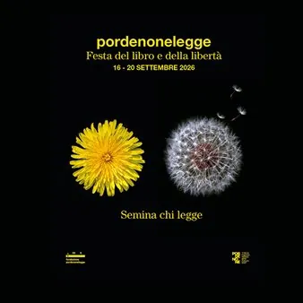

da mer 16 set a dom 20 set
Pordenonelegge 2026
La festa del libro con gli autori anima Pordenone e altre località del territorio con incontri, presentazioni, dialoghi e appuntamenti dedicati alla lettura.
 Indicazioni
Indicazioni
- Costi e prenotazioni
- Costo non indicato · Prenotazione non indicata
- Programma
- Programma raccolto. Gli appuntamenti delle diverse schede sono riuniti in questa pagina.
- In caso di maltempo
- Nessuna indicazione specifica pubblicata.
- Note
- Le schede dei singoli appuntamenti sono state unite nella manifestazione principale.
L’EVENTO
Descrizione completa
Dal 16 al 20 settembre 2026 pordenonelegge, la Festa del libro e della libertà, tornerà ad abitare la città e il territorio con la sua ventisettesima edizione, confermandosi tra gli appuntamenti più riconosciuti e attesi della scena culturale italiana.
Un’edizione che nasce dentro un tempo attraversato da domande urgenti: i conflitti che continuano a ferire il mondo, le trasformazioni tecnologiche che moltiplicano le possibilità dell’umano ma insieme ne interrogano l’identità, la necessità sempre più forte di trovare parole, idee e strumenti per leggere un presente in continuo movimento. Le piazze e le vie si animeranno di nuovi sguardi mentre si apriranno alla curiosità del mondo le mille finestre delle nostre stanze interiori.
L’obiettivo è generare una consapevolezza condivisa, capace di alimentare una cittadinanza più partecipe, curiosa e responsabile. Perché il futuro, anche quando appare incerto, comincia sempre da un discorso, da una pagina, da una parola messa in comune.
Descrizione Dal 16 al 20 settembre 2026 pordenonelegge, la Festa del libro e della libertà, tornerà ad abitare la città e il territorio con la sua ventisettesima edizione, confermandosi tra gli appuntamenti più riconosciuti e attesi della scena culturale italiana. Un’edizione che nasce dentro un tempo attraversato da domande urgenti: i conflitti che continuano a ferire il mondo, le trasformazioni tecnologiche che moltiplicano le possibilità dell’umano ma insieme ne interrogano l’identità, la necessità sempre più forte di trovare parole, idee e strumenti per leggere un presente in continuo movimento. Le piazze e le vie si animeranno di nuovi sguardi mentre si apriranno alla curiosità del mondo le mille finestre delle nostre stanze interiori. L’obiettivo è generare una consapevolezza condivisa, capace di alimentare una cittadinanza più partecipe, curiosa e responsabile. Perché il futuro, anche quando appare incerto, comincia sempre da un discorso, da una pagina, da una parola messa in comune. Programma Scopri come partecipare
Anche quest'anno il Comune di Sesto al Reghena è partner del festival Pordenonelegge ospitando Daria Bignardi per una serata da non perdere nel cuore del centro storico del borgo.
Con quest'opera Daria Bignardi riflette su un isolamento che non è più solo intimo, ma che si è trasformato in una vera epidemia sociale e che riguarda tutti in modi diversi. Muovendosi con grazia tra il racconto personale e il reportage, la narrazione ci porta dai silenzi della Cisgiordania ai vicoli del Vietnam. Un racconto profondo, a volte ironico, politico, anche terapeutico e sicuramente originale che affronta un tema delicato come la solitudine.
𝘗𝘰𝘳𝘥𝘦𝘯𝘰𝘯𝘦𝘭𝘦𝘨𝘨𝘦 𝘢 𝘚𝘦𝘴𝘵𝘰 𝘢𝘭 𝘙𝘦𝘨𝘩𝘦𝘯𝘢 𝐋𝐚 𝐬𝐨𝐥𝐢𝐭𝐮𝐝𝐢𝐧𝐞 𝐝𝐢 𝐭𝐮𝐭𝐭𝐢 con Daria Bignardi Presenta Anna Longo Venerdì 18 settembre - ore 21 Piazza Castello In caso di maltempo Auditorium Burovich Anche quest'anno il Comune di Sesto al Reghena è partner del festival Pordenonelegge ospitando Daria Bignardi per una serata da non perdere nel cuore del centro storico del borgo. Con quest'opera Daria Bignardi riflette su un isolamento che non è più solo intimo, ma che si è trasformato in una vera epidemia sociale e che riguarda tutti in modi diversi. Muovendosi con grazia tra il racconto personale e il reportage, la narrazione ci porta dai silenzi della Cisgiordania ai vicoli del Vietnam. Un racconto profondo, a volte ironico, politico, anche terapeutico e sicuramente originale che affronta un tema delicato come la solitudine.
Organized by: Fondazione Pordenonelegge Comune di Sesto al Reghena
Sabato 19 settembre Pordenonelegge fa tappa nella splendida cornice di Villa Brandolini d'Adda a Vistorta con un'ospite speciale: Csaba dalla Zorza. Alle ore 18.00 l'autrice presenterà il suo romanzo "Il tempo per un'altra vita", un racconto intimo ed emozionante sulla libertà di reinventarsi a sessant'anni, lasciandosi il passato alle spalle per trasferirsi in Provenza. Un appuntamento dedicato al coraggio di ricominciare e alle seconde possibilità.
Organized by: pordenonelegge Tel. 0434.1573100 0434.1573200 Email: fondazione@pordenonelegge.it in collaborazione con il Comune di Sacile e Vistorta
Al Teatro Miotto di Spilimbergo, Stefania Auci ci proietterà nell'attesissimo prequel della sua saga:
, ripercorre i sacrifici della celebre dinastia prima del grande successo palermitano, quando Paolo e Ignazio sono ancora ragazzi pronti a tutto pur di fuggire dalla miseria. Tra amori contrastati, sacrifici immensi e un’ambizione feroce, si gettano le basi di un impero leggendario. Un racconto epico e vibrante che svela i segreti e le ferite di una dinastia prima del grande successo.
Con Stefania Auci . Presenta Alessandro Mezzena Lona Al Teatro Miotto di Spilimbergo, Stefania Auci ci proietterà nell'attesissimo prequel della sua saga: I Florio: le origini , ripercorre i sacrifici della celebre dinastia prima del grande successo palermitano, quando Paolo e Ignazio sono ancora ragazzi pronti a tutto pur di fuggire dalla miseria. Tra amori contrastati, sacrifici immensi e un’ambizione feroce, si gettano le basi di un impero leggendario. Un racconto epico e vibrante che svela i segreti e le ferite di una dinastia prima del grande successo.
Organized by: A cura di Pordenone Legge, Comune di Spilimbergo
"Scimmia sapiens. Lettera a un adolescente sull'intelligenza artificiale" è una lettera appassionata dell'autore Marco Malvaldi che indaga i funzionamenti dell'IA rivendicando la centralità dell'uomo e ricordandoci che, forse, la cosa migliore da fare di fronte a un grande salto tecnologico sarà anche la più elementare: rimanere umani, capaci di sbagliare e di sorriderne con ironia.
IL PROGRAMMA
Programma e orari
Le singole date appartengono alla stessa manifestazione. Ogni sede verificata dispone delle proprie indicazioni.
Venerdì 18 settembre · Pordenonelegge
Sesto al Reghena · Piazza Castello, Sesto al Reghena In caso di pioggia Auditorium Burovich
- 𝘗𝘰𝘳𝘥𝘦𝘯𝘰𝘯𝘦𝘭𝘦𝘨𝘨𝘦 𝘢 𝘚𝘦𝘴𝘵𝘰 𝘢𝘭 𝘙𝘦𝘨𝘩𝘦𝘯𝘢 𝐋𝐚 𝐬𝐨𝐥𝐢𝐭𝐮𝐝𝐢𝐧𝐞 𝐝𝐢 𝐭𝐮𝐭𝐭𝐢 con Daria Bignardi Presenta Anna Longo Venerdì 18 settembre - ore 21 Piazza Castello In caso di maltempo Auditorium Burovich Anche quest'anno il Comune di Sesto al Reghena è partner del festival Pordenonelegge ospitando…
Sabato 19 settembre · pordenonelegge - Csaba dalla Zorza presenta "Il tempo per un’altra vita”
Sacile · Villa Brandolini d'Adda - Vistorta
- Sabato 19 settembre alle ore 18.00 Villa Brandolini d'Adda ospita Csaba dalla Zorza per presentare il suo libro "Il tempo per un’altra vita” all'interno del festival pordenone legge. Un racconto in cui le seconde possibilità, il cambiamento e la voglia di ricominciare permettono…
Sabato 19 settembre · PORDENONELEGGE - I Florio: le origini
Spilimbergo · Teatro Miotto, Spilimbergo
- Sabato 19 Settembre Piazza Garibaldi Con Stefania Aucci Presenta Alessandro Mezzena Lona Info: Tel. 0434.1573100 Tel. 0434.1573200 Email fondazione@pordenonelegge.it Orari: Lun - Giov 9:00 -13:00 e 15:00 - 17:00 Ven 9:00 - 13:00
Sabato 19 settembre · pordenonelegge - Scimmia Sapiens
Prata di Pordenone · Teatro Pileo - Prata di Pordenone
- Sabato 19 settembre, alle ore 21.00, viene presentato al Teatro Pileo di Prata di Pordenone il libro "Scimmia sapiens. Lettera a un adolescente sull'intelligenza artificiale", un'indagine sull'intelligenza artificiale e i suoi funzionamenti attraverso una riflessione appassionata…
Sabato 19 settembre · Treno storico Pordenonelegge 2026
Trieste, Pordenone · vari luoghi
- Treno a trazione elettrica con carrozze Centoporte degli anni '30 e bagagliaio Con due partenze, una da Treviso e una da Trieste, il treno storico raggiungerà Pordenone in occasione della manifestazione Pordenonelegge la Festa del libro con gli autori. Un festival letterario tra…
Domenica 20 settembre · pordenonelegge a Maniago - incontro con Ilaria Tuti
Maniago · Maniago Teatro Giuseppe Verdi Via Umberto I 53
- La scintilla nel buio Con Ilaria Tuti. Presenta Valentina Berengo Carnia, Seconda guerra mondiale. Quando i cosacchi invadono le montagne friulane, due mondi lontani e nemici sono costretti a una convivenza forzata. Tra il fango delle trincee e il gelo dell'inverno, la violenza…
INFORMAZIONI UTILI
Prima di partire
- Controllare la fonte prima di partire.
ORGANIZZAZIONE